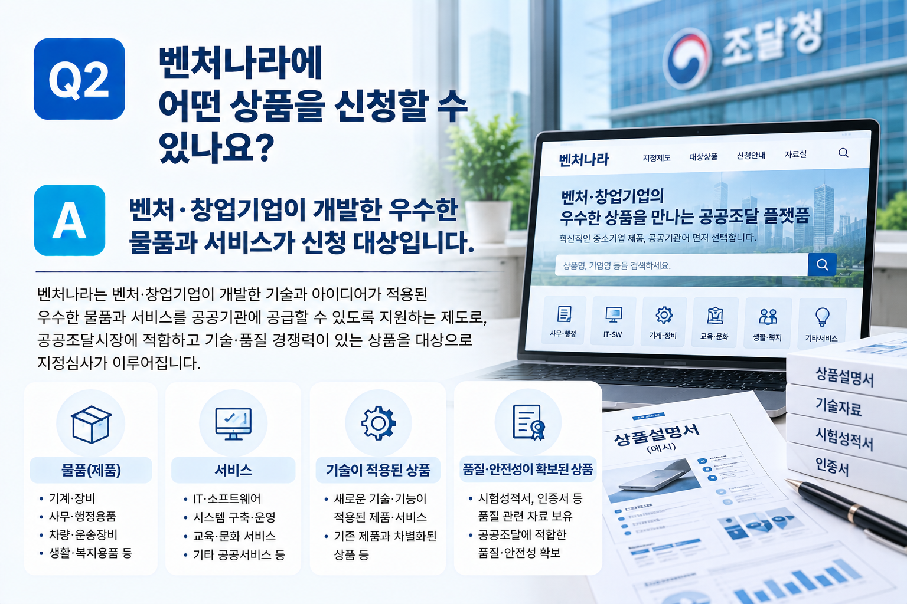

벤처·창업기업에 해당한다고 해서 모든 상품이 바로 벤처나라 지정대상이 되는 것은 아닙니다. 신청기업의 자격과 신청상품의 적정성, 기술적 특징, 품질·성능 및 이를 확인할 수 있는 자료 등을 함께 검토하여 지정 신청을 준비하는 것이 중요합니다.
01. 벤처나라란?
벤처나라는 벤처·창업기업의 우수한 상품이 공공조달시장에 진입할 수 있도록 지원하는 조달 관련 제도입니다.
신청기업의 자격뿐 아니라 실제 지정받으려는 상품을 기준으로 기술적 특징과 차별성, 품질·성능 등을 함께 검토하게 됩니다.
따라서 기업요건만 확인하기보다는 신청할 상품을 먼저 구체화하고 해당 상품을 설명하고 입증할 수 있는 자료를 준비하는 것이 중요합니다.
02. 신청기업의 자격을 먼저 확인합니다
벤처나라 지정 신청을 준비할 때에는 현재 기업이 신청대상 기업에 해당하는지를 먼저 확인해야 합니다.
벤처기업 또는 창업기업 등 신청하려는 유형에 따른 기업요건을 확인하고, 이를 증명할 수 있는 관련 자료도 함께 검토하는 것이 좋습니다.
| 확인사항 | 검토내용 |
|---|---|
| 기업요건 | 현재 기업이 벤처나라 신청대상에 해당하는지 확인 |
| 기업현황 | 사업자 및 기업의 기본현황 확인 |
| 증빙자료 | 신청기업의 자격을 확인할 수 있는 관련 자료 검토 |
03. 어떤 상품을 신청할 것인지 구체화합니다
벤처나라 지정심사는 기업 자체보다는 실제 신청하는 상품을 중심으로 준비하게 됩니다.
따라서 기업이 보유한 여러 제품이나 서비스 가운데 어떤 상품을 신청할 것인지 먼저 정하고, 해당 상품의 용도와 기능, 주요 고객 및 공공기관에서의 활용 가능성 등을 구체적으로 정리하는 것이 좋습니다.
신청상품이 정해지면 물품식별번호 등 조달등록과 관련하여 필요한 준비사항도 함께 확인합니다.

04. 기술적 특징과 차별성을 정리합니다
신청상품에 어떤 기술이 적용되어 있는지, 기존 제품이나 서비스와 비교하여 무엇이 다른지를 구체적으로 설명할 수 있어야 합니다.
단순히 “기술력이 우수하다”거나 “기존 제품보다 편리하다”는 표현만으로는 상품의 특징을 충분히 설명하기 어렵습니다.
적용된 기술이나 기능이 무엇인지, 그 기술로 인해 성능이나 사용방법, 효율성 등이 어떻게 달라지는지를 구체적으로 정리하는 것이 중요합니다.
- 신청상품에 적용된 주요 기술 또는 기능
- 기존 제품·서비스와 다른 점
- 기술 적용으로 개선된 기능이나 성능
- 공공기관이 활용할 경우 기대할 수 있는 효과
05. 품질·성능을 객관적으로 확인할 자료를 준비합니다
상품설명서에 품질과 성능이 우수하다고 작성하는 것만으로는 충분하지 않을 수 있습니다.
신청상품의 특성에 따라 시험성적서나 인증서 등 품질·성능을 객관적으로 확인할 수 있는 자료가 있는지 검토하는 것이 중요합니다.
- 시험성적서 등 성능 확인자료
- 제품 또는 기술 관련 인증자료
- 지식재산권 등 기술 관련 보유자료
- 품질·안전성을 확인할 수 있는 관련 자료
- 상품의 특징과 성능을 설명할 수 있는 기타 증빙자료
06. 필요한 인증과 신청자료를 확인합니다
신청상품에 따라 제조·판매 또는 공급을 위해 법령상 필요한 인증이나 등록 등이 있을 수 있습니다.
따라서 신청 전에 해당 상품에 법정의무인증 등이 적용되는지를 확인하고 필요한 요건을 갖추고 있는지 검토해야 합니다.
이후 상품설명서와 기술·품질 관련 자료 등 지정 신청에 필요한 자료를 준비하게 됩니다.
- 신청기업의 자격 관련 자료
- 신청상품의 기본정보
- 상품의 기술적 특징과 차별성 자료
- 품질·성능 관련 증빙자료
- 법정의무인증 등 필요한 인증자료
- 상품설명서 등 지정 신청자료
07. 벤처나라 지정 신청은 이런 흐름으로 준비합니다
처음부터 상품설명서를 작성하기보다는 기업요건과 신청상품의 적정성을 먼저 확인하고, 기술적 특징과 품질·성능을 뒷받침할 수 있는 자료를 정리한 뒤 신청자료를 작성하는 것이 효율적입니다.
08. 지정 이후에는 상품등록 절차도 확인해야 합니다
벤처나라 지정심사를 통과했다고 해서 곧바로 모든 절차가 끝나는 것은 아닙니다.
지정된 상품을 벤처나라에서 실제로 확인하고 구매할 수 있도록 하기 위해서는 지정 이후 필요한 상품등록 절차를 확인해야 합니다.
따라서 지정 신청 단계부터 지정심사뿐 아니라 이후 상품등록까지 고려하여 필요한 조달 관련 준비사항을 함께 확인해 두는 것이 좋습니다.
우리 제품도 벤처나라에 신청할 수 있을까요?
간단한 자가진단을 이용하거나 기업요건과 신청상품의 기술·품질 및 현재 보유하고 있는 증빙자료를 기준으로 상담을 신청해 보세요.
※ 벤처나라의 신청대상, 지정요건, 심사기준 및 제출자료 등은 신청 시점의 공고와 신청상품의 종류 등에 따라 달라질 수 있으므로 실제 지정 신청 시에는 해당 공고와 기업·상품의 현황을 기준으로 확인하시기 바랍니다.